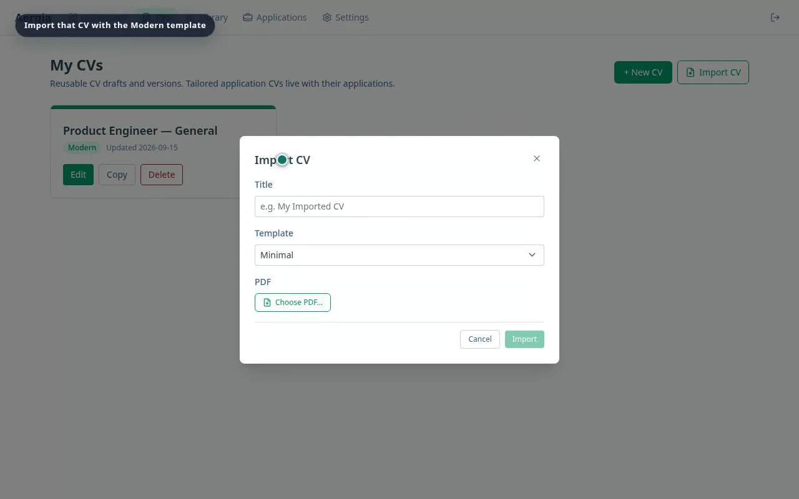
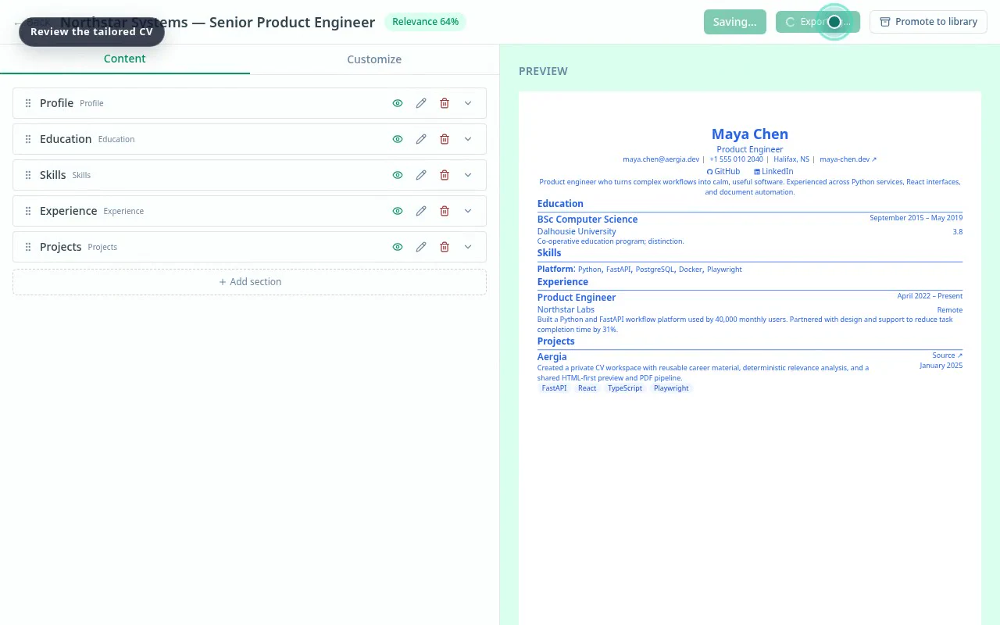
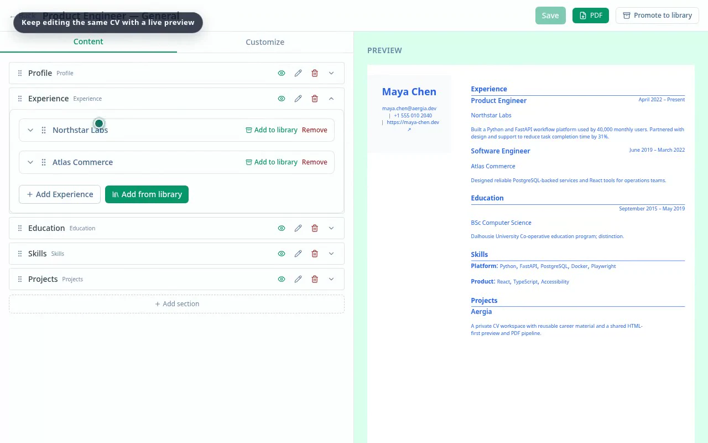
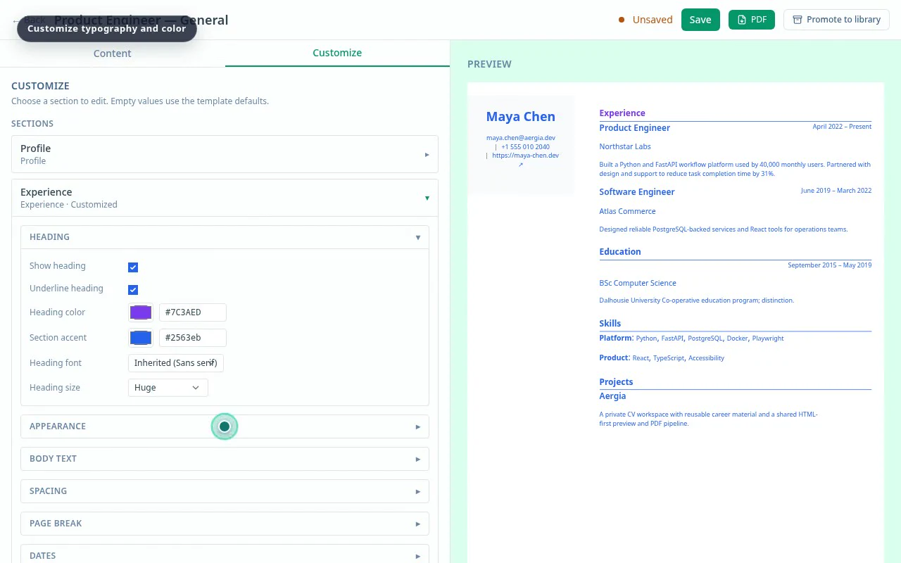
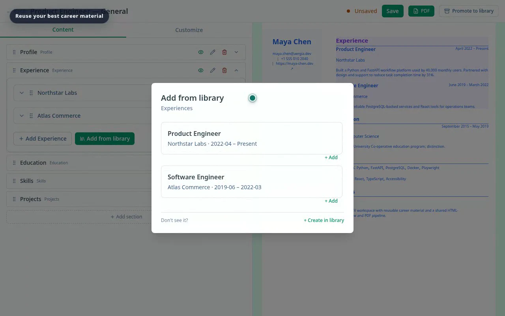
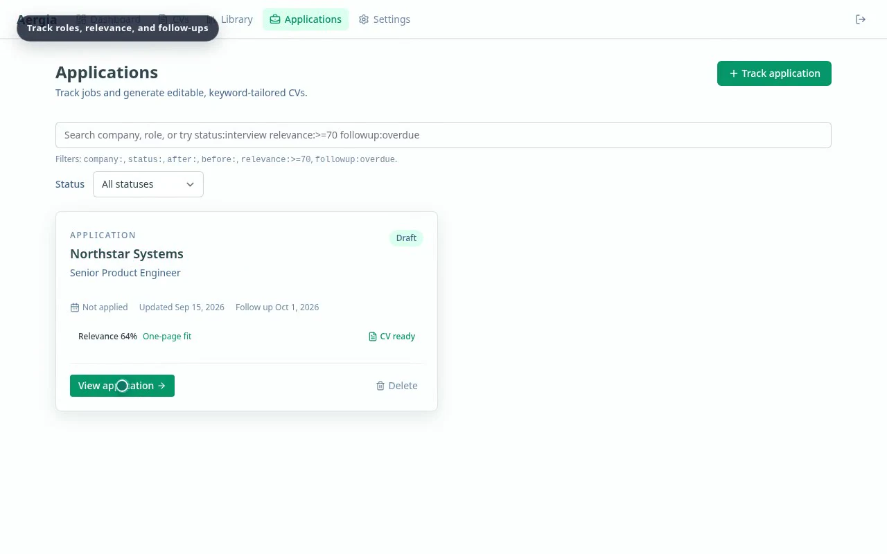
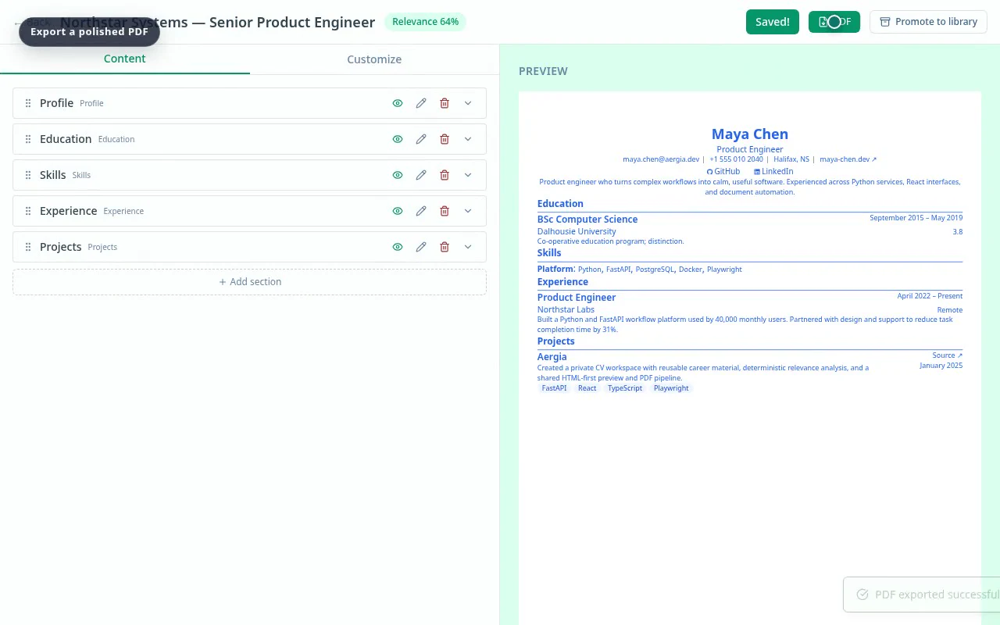

01 / BEGIN
Bring in what you already have.
Start clean or import a PDF into a structured CV you can continue editing.
- CV dashboard
- PDF import
- Modern and Minimal templates

A private workspace for your job search
Build your source CV, reuse the work you are proud of, tailor it to each role, and keep the entire application in view.

Your CV should be a living body of work, not a file you rebuild for every application.
The complete workflow
Each part of the search stays connected. Your source material remains reusable; every application keeps its own context and document.
Start clean or import a PDF into a structured CV you can continue editing.

Work with structured sections while the resolved CV stays visible. Typography, color, spacing, headings, and layout remain yours to tune.


Promote useful experience, projects, and skills to your Library, then bring them into the next CV without copy-and-paste drift.

Track the role, status, relevance, and follow-up. Review the tailored version beside the application and export only when it is ready.


63 seconds, end to end
The real application, from importing a source CV through editing, reuse, tracking, tailoring, and PDF export.
Independently designed and built
Keep one dependable source, make each version purposeful, and send the right story.
Create your workspace →